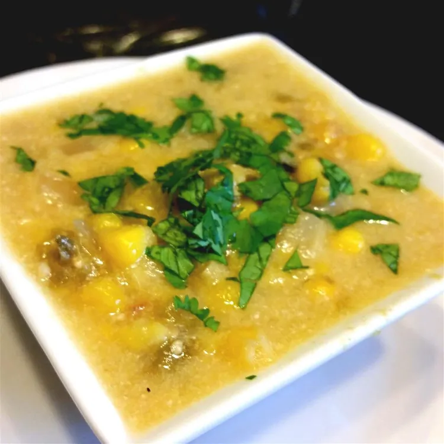

A rich and creamy chowder made with both fresh corn and canned hominy gives this soup a chunky, slightly chewy texture. Serve with homemade cornbread and salad for a comforting vegetarian meal.
Bring a large pot of water to a boil over high heat. Add the tomatillos, and boil for 10 minutes; drain.
Meanwhile, melt the butter in a large pot over medium heat. Stir in the onions, and cook until they have softened and turned translucent, about 5 minutes. Stir in the hominy, marjoram, and thyme, cook and stir 5 minutes more. Pour in the milk, parsley, and half of the corn kernels, and bring to a simmer over medium-high heat.
Puree the tomatillos with the remaining half of the corn until smooth in a blender, then stir into the soup along with the roasted peppers. Simmer the soup for 10 minutes, then remove the parsley sprigs, and sprinkle with cilantro before serving.